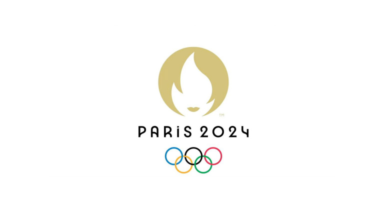
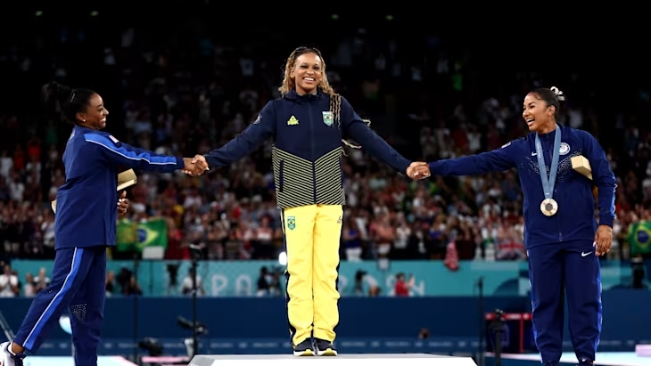
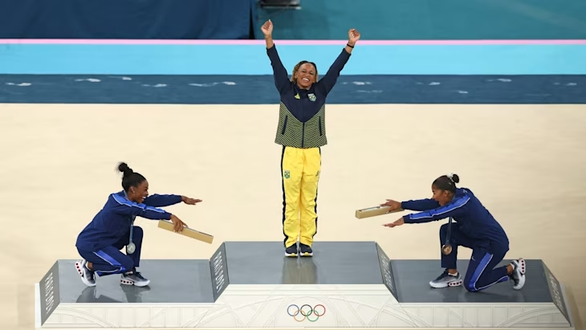

Paris 2024 Olympics
The Olympics is a global multi-sport event that takes place every four years, featuring both Summer and Winter Games. It brings together athletes from around the world to compete in a wide range of sports. This year, the Summer Olympics are being held in Paris, France. Here's a brief overview:
General Information
- Dates: July 26 - August 11, 2024.
- Location: Paris, France.
- Motto: "Games Wide Open".
- Events: Over 300 events across 32 sports.
- Venues: Paris and surrodsunding areas, with some events held in iconic locations like the Champs-Élysées and the Seine River.
First all-black women's Olympic gymnastics podium
At the 2024 Paris Olympics, a moment has highlighted the spirit of sportsmanship and camaraderie on the Olympic stage when Rebeca Andrade shared the podium with her two friends: Simone Biles and Jordan Chiles.
- Rebeca Andrade - Gold
- Simone Biles - Silver
- Jordan Chiles - Bronze
“As soon as we were standing there, me and Jordan looked at each other,” Biles told Olympics.com in an exclusive interview. “We were kind of all cherishing that together because we knew how special it would be, and we knew the impact that it would make on all the little girls around the world that are trying to do what we’re doing, just for them to know that it’s possible.
Biles and Chiles bowed to Andrade as she stepped onto the podium, a gesture Biles says her younger self might have expected.
“She would probably laugh and be like, ‘You’re so ridiculous,’” she said. “But that is the most Simone and Jordan thing you guys could ever have done, so she would be very happy that the sportsmanship was there.”
If you want to read more about the Olympics, visit the official Olympics Webpage